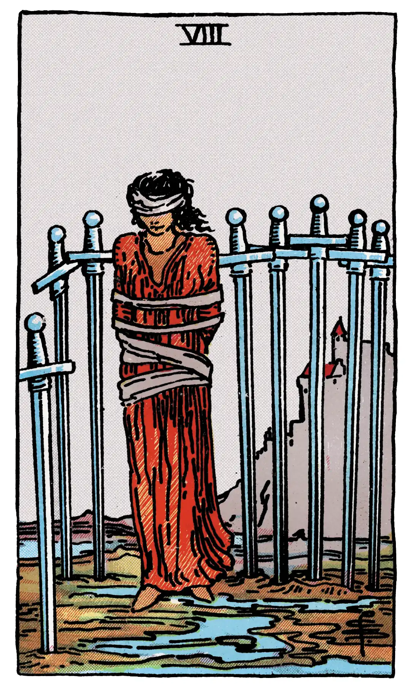

Eight of Swords

A.E.W.
Upright
Bad news, violent chagrin, crisis, censure, power in trammels, conflict, calumny; also sickness.
Additionally
For a woman, scandal spread in her respect.
Recurrence
2 - New knowledge.
3 - Marriage.
4 - Reverse.
Reversed
Disquiet, difficulty, opposition, accident, treachery; what is unforeseen; fatality.
Additionally
Departure of a relative.
Recurrence
2 - Misfortune.
3 - A spectacle.
4 - Error.
S.L.M.M.
Upright
Sickness, Calumny, Criticism, Blame
Reversed
Treachery in the Past, Event, Accident, Remarkable Incident.
Description
A woman, bound and hoodwinked, with the swords of the card about her. Yet it is rather a card of temporary durance than of irretrievable bondage.